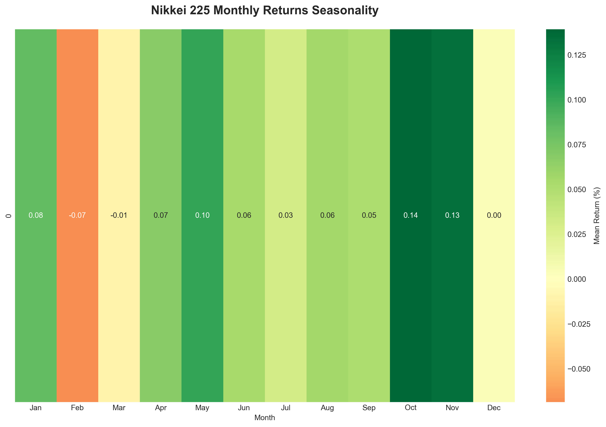
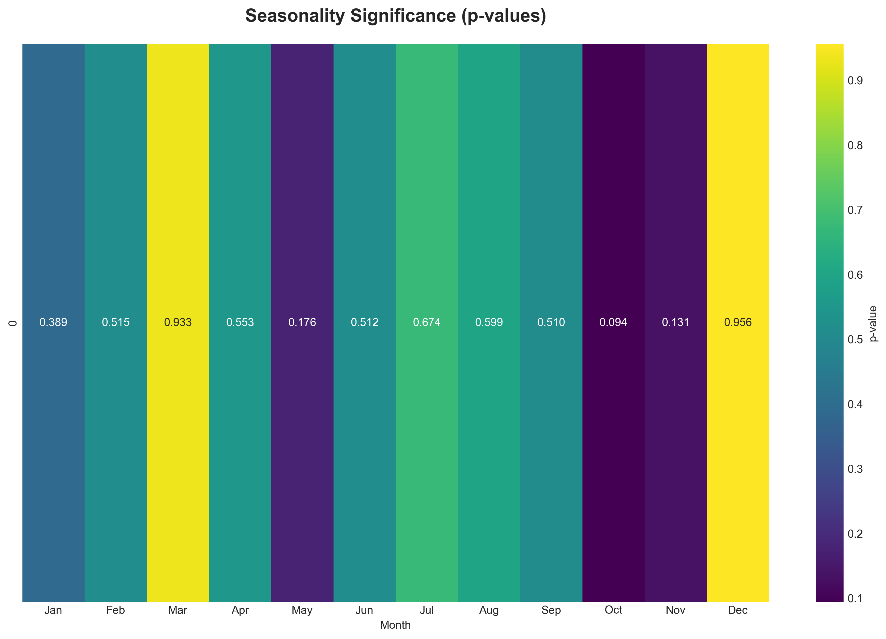

🌸 Advanced Seasonality & Valuation Analysis
1. Valuation Model & Deviation (Yield Gap)

Methodology: Comparison of Actual PER against Theoretical Fair PER (derived from 10y JGB Yield + Risk Premium). Shaded areas indicate periods of overvaluation (Red) and undervaluation (Green).
2. Seasonal Stability Matrix (Year x Month)

Insight: Detailed breakdown of monthly returns by year. Helps identify whether a seasonal pattern is consistent over time or driven by outliers.
3. Monthly Return Distributions

Statistical Robustness: Boxplots show the median, interquartile range (IQR), and outliers for each month. Narrow boxes indicate consistent behavior; wide boxes indicate high volatility.
Mean Returns Heatmap
Statistical Significance (P-Values)
5. Cumulative Seasonality Trend

Test Specification: Seasonality evaluated via One-Sample T-test (Null: Mean=0). Significance threshold p < 0.05 (Bonferroni corrected).